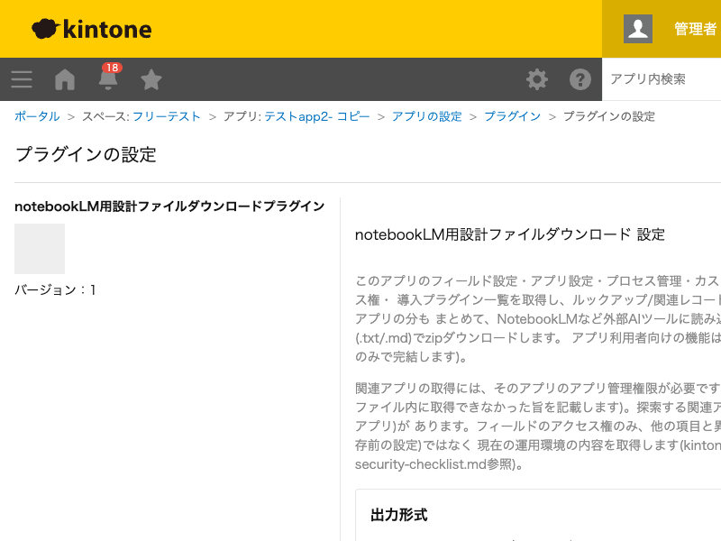

GovAppsプラグイン 安全性を確認できる無料kintoneプラグイン集
社内アプリ作成者からの引き継ぎ資料作成を目的に、アプリのフィールド設定・アプリ設定・プロセス管理・ カスタマイズ(JS/CSSファイル本体を含む)・条件通知・アクセス権(アプリ/レコード/フィールド)・ 導入プラグイン一覧を取得し、ルックアップ/関連レコード一覧が参照している関連アプリの分もまとめて、 NotebookLMなど外部AIツールに読み込ませやすい形式(.txt/.md)でzipダウンロードします。プラグイン 設定画面のみで完結し、アプリ利用者向けの機能はありません。
後任担当者への引き継ぎの際、フィールド一覧・カスタマイズの中身・通知やアクセス権の設定を手作業で書き出す代わりに、設定画面のボタン1つでNotebookLMなど外部AIツールに読み込ませられる形式のドキュメントをまとめて出力できます。
ルックアップや関連レコード一覧で他アプリを参照しているアプリは、参照先アプリの設計もあわせて見ないと全体像がつかめません。関連アプリを自動的に辿って一括ダウンロードできるため、複数アプリにまたがる業務フローの設計書を一度に揃えられます。
app_<アプリID>.txt(または.md)をNotebookLMなど外部AIツールにアップロードする。metadata.txtにはアプリ間の参照関係がまとめて記載されている。関連アプリの取得には、そのアプリのアプリ管理権限が必要です。権限が無い関連アプリは、ファイル内に取得できなかった旨が記載されます。フィールドのアクセス権のみ、他の項目と異なり保存前の設定ではなく現在の運用環境の内容を取得します(kintoneの仕様上の制約)。ダウンロードされるzipにはアクセス権設定・通知先・条件式・カスタマイズのソースコードなど社内的に機微な情報が含まれる場合があるため、ダウンロード後のファイルの保管・共有は利用者側の責任で適切に行ってください。
kintoneセキュアコーディングガイドラインに沿って実装時にチェックしています。特に重要な点は次のとおりです。
kintone.api()(kintone自身への呼び出し専用の内部ラッパー)のみでREST APIを呼び出しています。生のfetch/XMLHttpRequestでURLを直接組み立てていません。kintone.api()が「利用できないAPI」と明記されているためfetch()を使いますが、宛先は常にkintone自身のURLのみで、外部サーバーへの通信は一切行いません。外部ライブラリも使用していません。textContentのみで描画し、innerHTMLは使用していません。取得した設計情報(他ユーザーが設定した文字列を含みうる)は設定画面のDOMには一切描画されず、ダウンロードされるファイルの中身としてのみ出力されるため、この経路でのXSSのリスクがありません。詳細な確認項目・確認日は下記GitHubのチェックリストに全項目を掲載しています。

起点アプリ1つにつき、フィールド設定・アプリ設定・プロセス管理・カスタマイズ設定・条件通知 (アプリ全体/レコード条件/リマインダー)・アクセス権(アプリ/レコード/フィールド)・アプリアクション・ 導入プラグイン一覧・アプリ基本情報の計12回のREST API呼び出しに加え、カスタマイズファイルが 添付されている場合はファイルごとに1回ずつダウンロードが発生します。ルックアップ/関連レコード一覧で 参照している関連アプリがある場合は、そのアプリごとに同じ回数のAPI呼び出しが追加されます (最大30アプリまで)。いずれも「設計書をダウンロード」ボタンを押したときのみ実行され、 レコード画面での操作では一切実行されません。